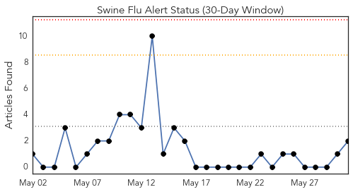
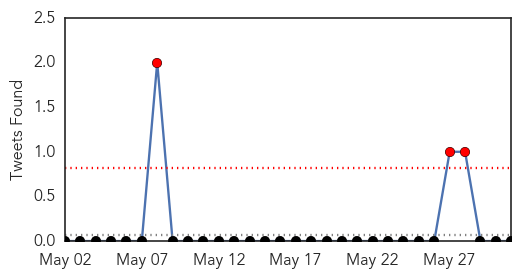
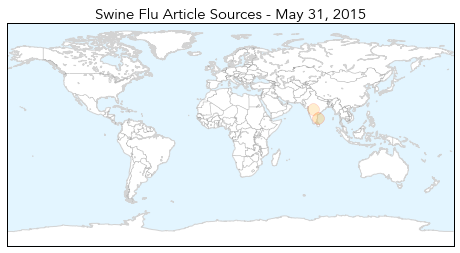
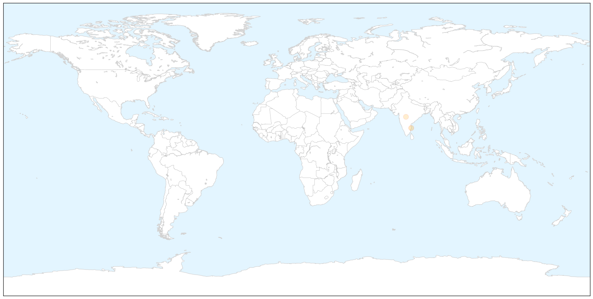
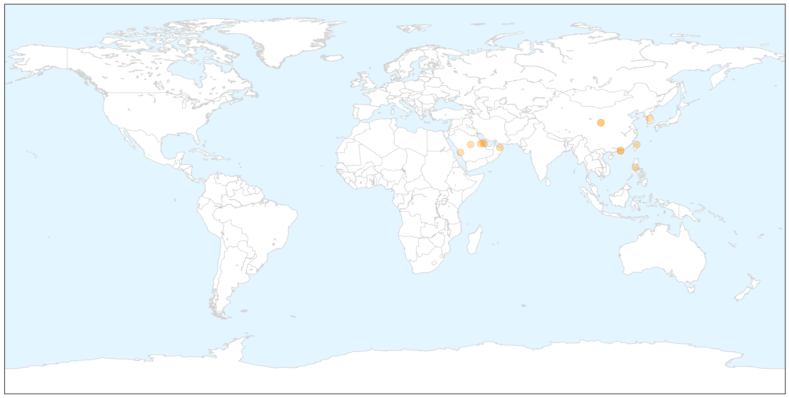

Swine Flu
30-Day Web Trend
0 alerts, 0 warnings

30-Day Twitter Trend
3 alerts, 0 warnings

Article Locations

X

Article Confidences

Top Articles:
Top Tweets:
-
No tweets found for May 31, 2015
MERS
30-Day Web Trend
10 alerts, 2 warnings

30-Day Twitter Trend
7 alerts, 0 warnings

Article Locations

X

Article Confidences

Top Articles:
- 1.000
- S. Korean health chief apologizes over MERS outbreak
- 1.000
- UAE clears MERS patients, Saudi finds 11 new cases
- 1.000
- Taipei suspected MERS case tests negative
- 0.999
- 77 come in contact with MERS patient in Guangdong
- 0.993
- Seoul confirms 15th MERS case
- 0.988
- MERS in South Korea: 15 cases reported to date
- 0.981
- Sixth Mers case reported in the Sultanate
- 0.971
- Two MERS patients recover in UAE
- 0.971
- 30 soldiers quarantined amid SKorean MERS outbreak
- 0.970
- Number of contacts with ...｜Society｜WCT
- 0.925
- KUNA : Saudi Arabia reports 11 new MERS-Cov cases
- 0.885
- (EDITORIAL from Korea JoongAng Daily on June 1)
- 0.885
- (EDITORIAL from Korea JoongAng Daily on June 1)
Top Tweets:
-
No tweets found for May 31, 2015